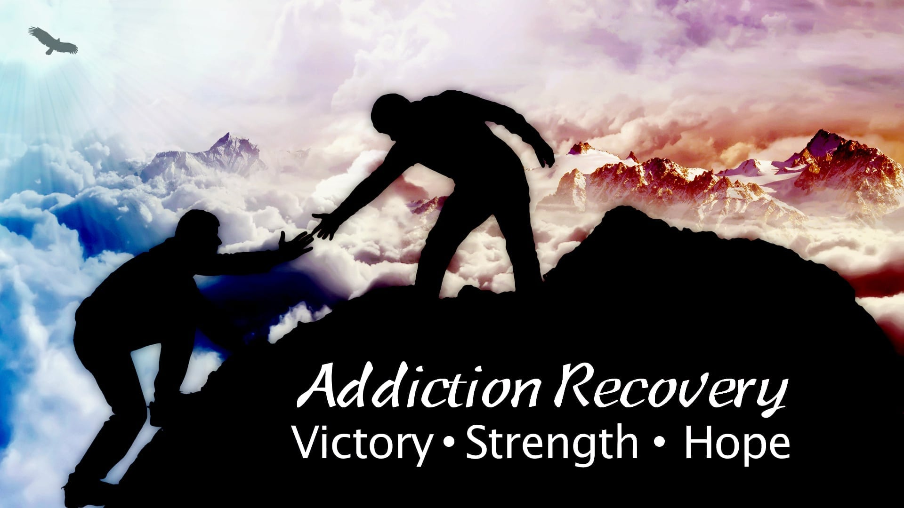
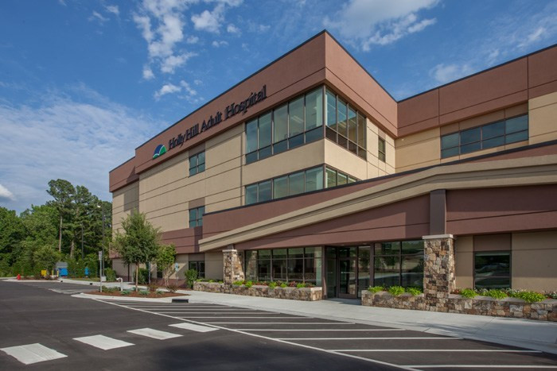
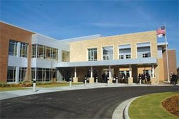
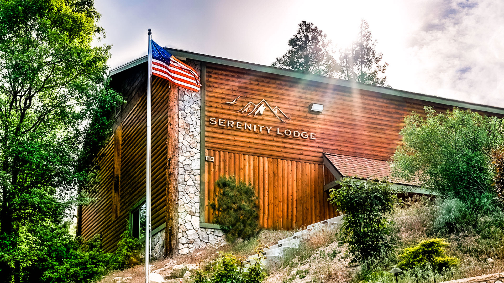
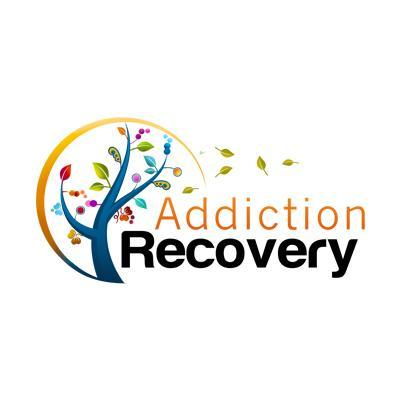

Holly Hill is located in Raleigh, NC. This is an inpatient treatment center that provides acute crisis stabilization services for all age groups including treatment for addiction. These services are offered 24 hours, 7 days a week and 365 days a year.

WakeBrook is an outpatient clinic that provides behavioral health and substance abuse walk-in services inclusing crisis screening, assessment, intervention and stabilization. We are available for anyone who is experiencing a crisis related to mental illness, developmental disablity and/or substance abuse. These services are offered 24 hours, 7 days a week and 365 days a year.

Serenity Lodge is an inpatient and outpatient treatment center. They are located several different states for instance Pennsylvania, California , and North Carolina. These services are offered 24 hours, 7 days a week and 365 days a year.

How to contact us
2127 Ridgelawn Ave
Bethlehem PA, 18020
Phone Number - +1 (555) 555-5555